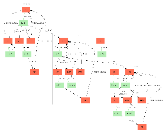

This plugin got marked as deprecated since Struts 2.5.11!
The SiteGraph plugingenerates graphical diagrams representing the flow of your web application.
SiteGraph works by parsing your configuration files, Action classes, and view files (JSP, Velocity, and FreeMarker), and displaying a visual map.
Additional information can be found in the JavaDocs:
SiteGraph is a tool that renders out GraphViz-generated images depicting your Struts-powered web application's flow. SiteGraph requires GraphViz be installed and that the "dot" executable be in your command path. You can find GraphViz at http://www.graphviz.org.
Understanding the Output
There are several key things to notice when looking at the output from SiteGraph:
- Boxes: those shaded red indicate an action; those shaded green indicate a view file (JSP, etc).
- Links: arrows colored green imply that no new HTTP request is being made; black arrows indicate a new HTTP request.
- Link labels: labels may sometimes contain additional useful information. For example, a label of href means that the link behavior is that of a hyper-text reference. The complete label behaviors are provided:
- href - a view file references an action by name (typically ending with the extension ".action")
- action - a view file makes a call to the action tag
- form - a view file is linked to an action using the form tag
- redirect - an action is redirecting to another view or action
- ! notation - a link to an action overrides the method to invoke
Requirements
SiteGraph requires that your view files be structured in a very specific way. Because it has to read these files, only certain styles are supported. The requirements are:
- The JSP tags must use the "s" namespace.
- In JSP: <s:xxx/>
- In FreeMarker: <@s.xxx/>
- In Velocity: N/A
- Use of the form tag and action tag must be linking directly to the action name (and optional namespace). This means that <s:form action="foo"/> is OK, but <s:form action="foo.action"/> is not.
Here is also a short overview of what it does and why a developer would want to use it.
Features
- Generates a graphical view of your web application
Usage
You can use SiteGraph with the following command:
java -cp ... -jar struts2-sitegraph-plugin-x.x.x.jar
-config CONFIG_DIR
-views VIEWS_DIRS
-output OUTPUT
[-ns NAMESPACE]
Where:
You must either supply the correct classpath when invoking the SiteGraph tool or place the Sitegraph plugin in the same directory as the dependent jars. Specifically, the XWork jar, Struts jar, and their dependencies must be included in the classpath. Futhermore, you must also include your Action class files referenced in struts.xml. Without the proper class path entries, SiteGraph will not function properly.
Once you have run SiteGraph, check the directory specified in the "output" argument (OUTPUT). In there you will find two files: out.dot and out.gif. You may immediately open up out.gif and view the web application flow. However, you may also wish to either run the out.dot file through a different GraphVis layout engine (neato, twopi, etc), so the original dot file is provided as well. You may also wish to edit the dot file before rendering the final flow diagram.
Automatic Execution
Some advanced users may wish to execute SiteGraph from within their application - this could be required if you are developing an application that supports plugin capabilities. This can easily be done. See the JavaDocs for more info:
If you wish to use SiteGraph through its API rather than through the command line, you can do that as well. All you need to do is create a new SiteGraph instance, optionally specify a Writer to output the dot content to, and then call #prepare().
The command line version of SiteGraph does exactly this (except for overriding the Writer):Example
|  |
Settings
This plugin doesn't allow for any global settings.
Installation
The SiteGraph plugin jar is distributed with Struts, so if you're up and running, you don't need to do download any additional Java packages. However, SiteGraph does require the "dot" package by GraphViz.
You'll need to download the latest version of GraphViz and make sure that the dot executable (dot.exe in Windows) is in your command path. In Windows the GraphViz installer typically automatically adds dot.exe to your path. However, you may need to do this by hand depending on your system configuration.